Реле
Реле (фр. relais) — электрическое или электронное устройство (ключ), предназначенное для замыкания или размыкания электрической цепи при заданных изменениях электрических или неэлектрических входных воздействий.
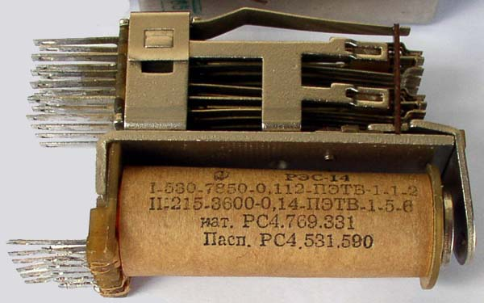
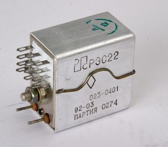
Рис. 1 - Внешний вид реле
Обычно под этим термином подразумевается электромагнитное реле — электромеханическое устройство, замыкающее и/или размыкающее механические электрические контакты при подаче в обмотку реле электрического тока, порождающего магнитное поле, которое вызывает перемещения ферромагнитного якоря реле, связанного механически с контактами, и последующее перемещение контактов коммутирует внешнюю электрическую цепь.
Принцип работы реле
Принцип работы реле - соединение/разъединение контактов посредством электропривода. Ток протекающий через обмотку катушки реле создаёт магнитное поле, которое притягивает якорь к сердечнику катушки. Этот якорь механически соединён с подвижным (общим) контактом, который отсоединяется от одного контакта (нормально замкнутого) и соединяется с другим (нормально разомкнутым). Ток в катушке реле может течь, а может не течь. Этим определяется два состояния реле. Если тока нет, то замкнуты общий и нормально замкнутый контакты, а общий и нормально разомкнутый - разомкнуты. Если ток течёт, то замкнуты общий и нормально разомкнутый и разомкнуты общий и нормально замкнутый.
Реле позволяет одной схеме коммутировать другую, которая абсолютно отделена от первой. Например, низковольтная схема на батарейке может коммутировать напряжение промышленной сети 220 В. И нет никакой электрической связи в реле между этими двумя схемами. Только магнитная и механическая. Это и есть описание принципа работы реле.
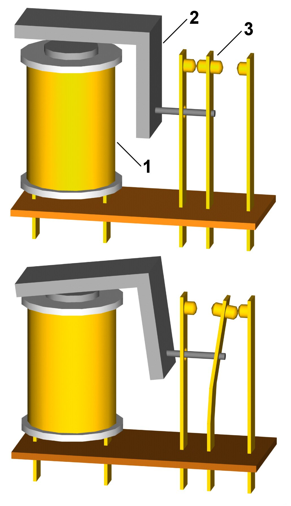
Рис. 3 - Принцип действия реле, сверху — нормальное (обесточенное) состояние реле, снизу — включённое состояние реле.
1 — электромагнит (обмотка с ферромагнитным сердечником);
2 — подвижный якорь;
3 — контактная система (переключатель).
Катушка реле пропускает через себя относительно большой ток. К примеру для 12-вольтового реле это может быть около 30 мА. Но может быть ток и 100 мА для реле, предназначенных для работы от низковольтного напряжения. Но при работе реле от микросхемы, последняя может не потянуть необходимое напряжение или ток. Для этого между микросхемой и катушкой реле ставят транзистор, который просто является усилительным элементом. Он усиливает маломощный выход микросхемы до уровня, необходимого для срабатывания реле. Но принцип работы реле при этом не нарушается - коммутация в одной схеме посредством другой без какой бы-то ни было электрической связи между ними.
Реле различаются по системе контактов, которыми они управляют. По сути, реле это электрический переключатель.
Обозначение реле на схемах
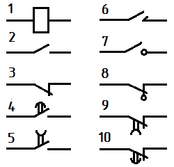
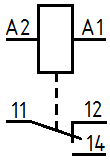
Рис. 4 - Условное графическое обозначение реле
1 — обмотка реле (A1, A2 — управляющая цепь), 2 — контакт замыкающий, 3 — контакт размыкающий, 4 — контакт замыкающий с замедлителем при срабатывании, 5 — контакт замыкающий с замедлителем при возврате, 6 — контакт импульсный замыкающий, 7 — контакт замыкающий без самовозврата, 8 — контакт размыкающий без самовозврата, 9 — контакт размыкающий с замедлителем при срабатывании, 10 — контакт размыкающий с замедлителем при возврате, 11 — общий контакт, 11-12 — нормально замкнутые контакты, 11-14 — нормально разомкнутые контакты
Параметры реле
Параметры реле делятся на основные и не основные. Ориентироваться надо на основные параметры реле, т.к. именно они характеризуют их эксплуатационные возможности и область применения и в конечном итоге влияют на нормальную работоспособность реле.
В свою очередь, основные параметры делятся на электрические и временные.
Электрические параметры реле
- Чувствительность реле - способность срабатывать при определённом значении мощности, подаваемой на обмотку реле. Определяется магнитодвижущей силой (МДС) срабатывания. Если сравнивать между собой разные реле, то наиболее чувствительное будет то, у которое срабатывает при меньшей МДС. При этом якорь реле должен чётко притягиваться и контакты всех групп должны замкнуться/разомкнуться.
В справочниках обычно такой параметр как чувствительность не приводится. Он вычисляется из сопротивления обмотки и тока срабатывания.
Pср = Iср2 · Rобм = Uср2/ Rобм - Рабочее напряжение (ток).
Техническими условиями для конкретных типов реле устанавливается рабочее напряжение (ток), при питании которым обеспечивается нормальное функционирование реле. В технической документации на конкретное исполнение реле указывается его значение с допусками. При подаче на обмотку реле напряжения (тока) в указанных пределах, оно должно нормально функционировать. - Напряжение (ток) срабатывания.
Это один из параметров реле, определяющий его чувствительность. Это минимальное напряжение (ток) при котором реле должно нормально сработать, т.е. переключить все свои контакты. А уже для дальнейшего удерживания якоря на обмотку реле надо подавать рабочее напряжение (ток), описанное в предыдущем пункте. В технической документации данный параметр обязательно приводится для каждого исполнения реле. Данный параметр является контрольным. Он характеризует устойчивость всех элементов конструкции и стабильность регулировки реле. - Напряжение (ток) отпускания.
Обязательно приводится в технической документации на каждое исполнение реле как для нормальных условий эксплуатации, так и для условий, когда воздействуют различные факторы.
Отпускание реле - это не что иное, как возвращение контактов в исходное состояние. Происходит оно при снижении напряжения (тока) в обмотке реле до уровня, при котором якорь больше не может удерживаться в сработанном положении и возвращается в исходное состояние выключенного реле. Все контакты также переключаются в исходное состояние. Нормально замкнутые становятся замкнутыми, нормально разомкнутые - разомкнутыми.
Существует такой показатель, как коэффициент возврата. Это отношение тока отпускания к току срабатывания. Значение этого коэффициента у разных реле колеблется в очень больших пределах - от 0,1 до 0,98. Улучшение коэффициента возврата достигается путём сближения характеристик изменения электромагнитной силы, создающей магнитный поток, и силы пружины, противодействующей этому потоку. Также улучшения коэффициента возврата можно достичь путём уменьшения хода подвижной системы и снижения трения в её осях. - Сопротивление обмотки.
Сопротивление обмотки - это активное сопротивление обмотки реле с допусками, измеренное на постоянном токе. Обязательно приводится в технической документации и справедливо для нормальной температуры окружающей среды. - Сопротивление контактов электрической цепи.
Оно складывается из сопротивления элементов цепи контактов и сопротивления контактирующих поверхностей. Измерить сопротивление контактирующих поверхностей в реле очень сложно. Поэтому оно оценивается по сопротивлению всей цепи контактов.
Данный параметр может сильно изменяться как в процессе эксплуатации реле, так и в период доставки/транспортировки, т.к. зависит от многих факторов.
Попадание грязи на контакты реле влечёт за собой увеличение падения напряжения на контактах. Как следствие этого - повышенный нагрев контактов, который способен вообще вывести контактную пару из строя. Поэтому в технической документации как правило указывают сопротивление контактов на период поставки. - Коммутационная способность контактов реле.
Определяется значением мощности, коммутируемой контактами реле, выполняющими определённое количество коммутаций.
Важно понимать, что существует такая вещь, как коррозия контактов. И она сильно зависит от коммутируемой мощности. Но проявляется она при токах в 100 мА и более. При меньших токах основное влияние на работоспособность реле оказывает механический износ подвижной системы и контактов.
В тех. документации как правило указан диапазон коммутируемых напряжений и токов, при которых гарантируется конкретное число коммутаций.
Максимальная мощность, которую способно коммутировать реле, ограничивается температурой нагрева контактов, при которой снижается механическая прочность материала контактов. - Электрическая изоляция.
Характеризует электроизоляционные свойства реле. Это способность изоляции реле выдерживать перенапряжения (кратковременно и длительно), неизбежно возникающие в процессе эксплуатации аппаратуры. Изоляция реле определяется электрической прочностью промежутков - воздушных (межконтактных) зазоров и по поверхности диэлектрика платы реле. По этим промежуткам судят о токах утечки реле.
Временные параметры реле
- Время срабатывания - время, прошедшее с момента подачи напряжения на обмотку реле до первого замыкания нормально разомкнутых контактов.
- Время дребезга.
Иногда оговаривается в технической документации. Дребезг возникает после удара подвижных контактов о неподвижные. - Время отпускания.
Определяется временем от момента снятия напряжения с катушки реле до момента замыкания нормально замкнутого контакта.
Типы реле
- Электромагнитное реле - это тип электромеханического реле, принцип работы которого основан на воздействии магнитного поля катушки на подвижный якорь, который механически соединён с подвижными контактами.
- Поляризованное реле - электромагнитное реле со вспомогательным постоянным магнитом. Такие реле работают только при протекании тока в обмотке в определённом направлении. Характеризуются высокой чувствительностью.
- Герконовое реле - это тип электромеханического реле с герметизированными контактами. Контакты такого реле представляют собой аналог геркона. Преимущества такого реле в том, что его контакты не подвержены попаданию посторонних частиц (грязи, пыли) на поверхности контактов.
- Статическое реле - электрическое реле, принцип действия которого не подразумевает относительного движения его частей друг относительно друга.
- Электротепловое реле. Принцип действия этого типа реле основан на использовании тепла, выделяемого при протекании электрического тока.
- Одностабильное электрическое реле - электрическое реле, которое изменяет своё состояние при воздействии какой-то входной величины (например электрического напряжения (тока)) и возвращается в исходное состояние при пропадании этого воздействия.
- Двустабильное электрическое реле - реле, которое, изменив своё состояние при воздействии какой-то входной величины (тока, напряжения, ...), после прекращения этого воздействия не возвращается в исходное состояние. Для возвращения в исходное состояние необходимо другое воздействие.
- Герметичное реле - защищённое реле, способное не пропускать влагу при полном погружении его в воду.
- Реле тока - измерительное реле, для которого характеристической величиной является электрический ток.
- Реле напряжения - измерительное электрическое реле, для которого характеристической величиной является электрическое напряжение.
- Реле времени. Реле этого типа являются логическими электрическими реле с нормируемым временем. Другими словами, задаётся (или жёстко установлено) время срабатывания реле (через час, через сутки и т.д.) после включения.
Выбор реле
Выбирая реле необходимо учесть несколько особенностей.
- Физический размер реле и расположение контактов.
Если вы выбираете реле под существующую печатную плату, вы должны убедиться что её размер и расположение выводов совпадают с тем, что не плате. Необходимо найти эту информацию в соответствующей технической документации или в интернете на справочных сайтах. - Напряжение, на которое рассчитана катушка реле.
Номинальное напряжение и сопротивление катушки реле должны соответствовать требованиям принципиальной схемы, для которой это реле подбирается. Многие реле рассчитаны на 12 В, но 5-ти и 24-х-вольтовые реле тоже не редкость. Некоторые реле прекрасно работают при напряжении питания несколько меньше их номинального. - Сопротивление катушки.
Схема, куда вы собираетесь установить реле, должна быть в состоянии обеспечить катушку реле нужным уровнем тока. Вычислить нужный ток можно по Закону Ома:Ток в катушке реле [А] = Напряжение на катушке [В] Сопротивление катушки [Ом]
Например, выбрано реле под напряжение 12 В и её катушка имеет сопротивление 300 Ом. Считаем по Закону Ома и получаем, что схема должна обеспечить реле током в 40 мА. Если данное реле должно брать ток с выхода микросхемы, то для большинства микросхем такой ток может оказаться запредельным и придётся между ними ставить транзистор, который будет усиливать ток для питания реле. - Ток и напряжение, проходящие через контакты переключателя реле.
Необходимо проверить так называемую коммутационную способность контактов реле. Контакты реле должны быть способны пропускать требуемый ток и напряжение. - Тип переключателя реле.
Большинство реле имеют тип переключателя SPDT или DPDT, называемые ещё однополюсным переключателем или двухполюсным переключателем.
Типы переключателей: SPDT, DPDT, SPST и DPST
Типы переключателей (основные) в англоязычной системе обозначаются английской аббревиатурой: SPDT, DPDT, SPST и DPST, обозначающей количество полюсов (контактов, которые переключаются) и количество направлений (контактов, к которым подключаются или от которых отключаются).
SPDT
SPDT - Single Pole, Double Throw. Один полюс, два направления. Это означает, что есть один общий контакт (полюс), который может быть подключен к одному из двух других контактов. В русской схемотехнике это называется одна группа контактов. Подобный тип переключения имеет реле РЭС-10.
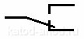
Рис. 5 - Переключатель типа SPDT
DPDT
DPDT - Double Pole, Double Throw. Два полюса, два направления. Что означает, что существуют два контакта (полюса), каждый из которых может быть подключен то к одному контакту, то к другому. По русски это называется две группы контактов. Электрически между собой каждая группа никак не соединена. Каждая из них может коммутировать совершенно разные схемы. Общее у них только одно, срабатывают они одновременно. Такой тип переключения имеет реле РЭС-9.
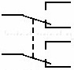
Рис. 6 - Переключатель типа DPDT
Существуют переключатели, у которых гораздо больше групп контактов, чем две. К примеру реле, которые сами по себе являются электрическими переключателями, с четырьмя группами контактов довольно распространены. Например реле РЭС-22.
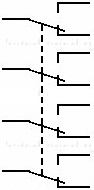
Рис. 7 - Переключатель типа SPDT
SPST
SPST - Single Pole, Single Throw. Один полюс, одно направление. Один контакт может быть подключен к одному другому контакту или отключен от одного другого контакта. Это тоже одна группа контактов, но не полная.
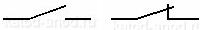
Рис. 8 - Переключатель типа SPST
DPST
DPST - Double Pole, Single Throw. два полюса, одно направление. Каждый из двух контактов может быть подключен к одному другому контакту или отключен от одного другого контакта. Это считается две группы контактов. Таких групп может быть и больше двух.
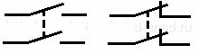
Рис. 9 - Переключатель типа DPST
Контакты переключателя также имеют свою аббревиатуру. Тот контакт, который общий, т.е. полюс, обозначается COM. Тот, с которым он нормально замкнут, называется NC, а тот, с которым он разомкнут - NO.
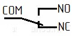
Рис. 10 - Обозначение контактов переключателя
- COM — Common, т.е. общий. Это подвижной контакт переключателя.
- NC — Normally Closed, нормально закрытый (нормально замкнутый). Применительно к реле, COM соединён с ним, когда реле обесточено.
- NO — Normally Open, Нормально открытый (нормально разомкнутый). Применительно к реле, COM соединён с ним, когда по катушке реле течёт ток.
- Соединяйте контакты COM и NO, если вам надо, чтобы они замыкались, когда подаётся напряжение на реле.
- Соединяйте контакты COM и NC, если надо, чтобы они были замкнуты, когда реле обесточено, размыкались при подаче напряжения.
Источники:
katod-anod.ru - Принцип работы реле
katod-anod.ru - Параметры реле
katod-anod.ru - Типы реле
katod-anod.ru - Выбор реле
katod-anod.ru - Типы переключателей: SPDT, DPDT, SPST и DPST
Википедия - Реле